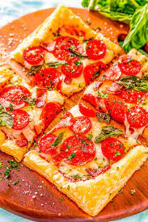
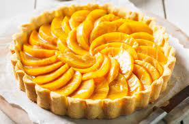

Puff Pastry Pizza
Ingredients
- 2 Jus-Rol Puff Pastry Sheets
- 1 jar (680g) passata
- Salt and freshly ground black pepper, to taste
- 300 g mozzarella, grated
- Margherita topping:
- 2 medium tomatoes sliced
- basil leaves
- Mixed vegetable topping:
- 1 red pepper, sliced
- 1 courgette, sliced
- 50 g chestnut mushrooms, sliced
- 3 Cherry tomatoes, halved
- Cured meat topping:
- 30 g sliced chorizo
- 30 g sliced salami
- A few black olives, pitted and sliced
- Parma ham and rocket topping:
- 50 g rocket
- 3-4 slices Parma Ham
- 25 g parmesan, shaved
Method
- Preheat the oven to 180°C/gas mark 4
- Heat the passata in a saucepan and simmer until thickened and reduced by half. Season to taste with salt and pepper, and leave to cool
- Cut each sheet of pastry in half (so that you have four rectangles) and use a knife to score a border around each piece, about 1cm from the edge
- Transfer the pastry sheets to lined baking trays and spread 2 tablespoons of the tomato sauce over each base and sprinkle over some of the grated mozzarella
- For the margherita topping, arrange the tomato slices over one of the bases
- For the veggie pizza, take the second base and scatter the sliced pepper, courgette, mushrooms and tomatoes
- For the cured meat pizza, arrange slices of the chorizo, salami and olives over the third base
- Leave the fourth base with just the sauce and mozzarella, as the toppings will be added after it is baked
- Cook for 30 to 35 minutes until the bases are golden and crisp
- Top the plain fourth pizza with rocket leaves, slices of the Parma ham and parmesan shavings
- Scatter some fresh basil leaves over the margherita pizza and drizzle them all with a little olive oil to serve

Peach Tart
Ingredients
- 1 Jus-Rol™ Shortcrust Pastry Sheet
- 6 Peaches
- 50g Caster sugar
- pinch Cinnamon
- 50g Butter, melted
- 50g Demerara sugar
- Apricot jam for glazing
